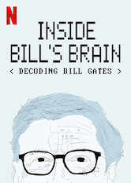
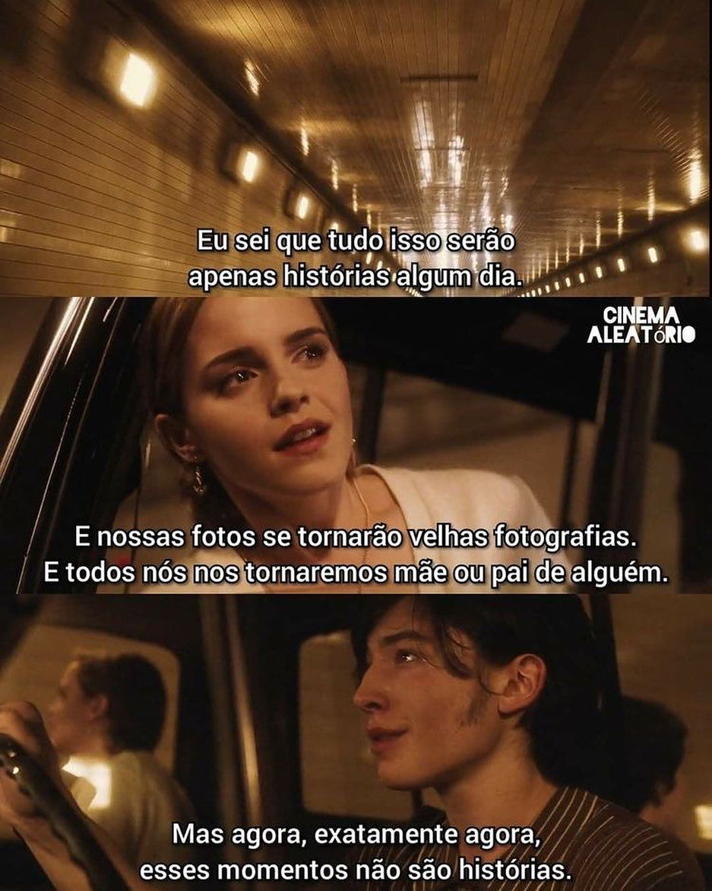

Aqui está o seu celular!
Nele você consegue visualizar alguns bate-papos...
Clique em uma conversa para acessar o chat de cada pessoa.
oi, soube que vc queria falar comigo...
11:21Olá, ainda quero hehe
11:21Gostaria de te conhecer melhor. Posso fazer algumas perguntas?
11:22Com certezaaaa!
11:24Quais são as músicas você mais gosta?
11:24eu gosto de ouvir de tudo um pouco hahahaha... veja minha playlist
11:24Realmente, bem eclética rs. Acho isso um máximo!
11:25E sobre filmes, séries, desenhos... Do que você gosta?
11:25Eu vejo de tudo, porém curto bastante filmes e séries de romance ou suspense. Amo todos os desenhos, principalmente Soul.
11:26Ahh eu também gosto bastante de Soul! Você curte documentários?
11:27Com certeza, amo documentários de animais marinhos, principalmente baleias...Fora os documentários de temas diversos, como o Amarelo - É Tudo Pra Ontem do Emicida, mt bom!
11:27Puts... AmarElo é muito bom.
11:29Falando sobre seu futuro, qual seu sonho?
11:29Hmmm. Sonhos eu tenho vários, mas foco mais em viajar para muitos países, ajudar minha família financeiramente e ter estabilidade fazendo o que eu amo... Programando!
11:32Interessante, e sobre suas inspirações? Me refiro à pessoas famosas.
11:33No âmbito de programação, curto muito as ideias de Bill Gates, a genialidade e a bondade dele me inspiram. Tem mais informações nesse documentário aqui
11:33
11:33Excelente! Profissionalmente falando, como você se define?
11:34Como alguém esforçada e sempre disposta a aprender qualquer tipo de ensinamento, seja técnico ou comportamental.
11:35Ótimo! Tem o link de seu Github e Linkedin disponível?
11:36Obrigado! Eu adoraria te conhecer mais, porém tenho que ir. Me manda uma imagem que te defina, por favor.
11:3411:34

11:35pode duas? haha
11:35Hahahaha muito bom. Foi um prazer te conhecer, qualquer dia volto para conversamos melhor.
11:36ok, estarei esperando ansiosamente. Até a próxima😊
11:37Olá, Gabriel. Tem um tempinho para conversar?
19:30Olá! Com certeza. Do que precisa?
19:31Queria saber um pouco sobre a Ana, tem algo para me contar?
19:32Ahh, a líder do Economie?
19:33Ela está liderando a equipe do projeto de TCC dela?
19:33Sim. Está aprendendo a liderar e tem me pedido dicas. Está se saindo bem.
19:33Que ótimo! E nas aulas, como ela se comporta?
19:34Ela é um pouco tímida, não fala muito quando não está ambientada.
19:35E sempre faz todas as tarefas bem feitinhas. Costuma se empenhar muito no que está fazendo.
19:35Isso é incrível. Temos uma aluna dedicada então.
19:36Bom, acho que isso é o suficiente por hoje hahaha, muito obrigado Gab!
19:38Imagina! Precisando de mais informações, pode me chamar.
19:40Precisando de uma menina esforçada... Chama a Ana haha. Até logo!
19:41Hahaha pode deixar, até.
19:42Hey Ellen, tudo bem?
21:42Gostaria de saber algumas informações sobre a Ana.
21:42Oi, bem e tu? Pode mandar kkkkk
21:43Estou bem, me fala um pouco sobre a personalidade dela.
21:44Ela é uma pessoa muito dedicada e tem espirito de líder, sempre acaba mandando em todo mundo kkkkkkk
21:45A gnt conversa bastante, eu sempre chamo ela pra sair mas ela acaba desistindo de última hora
21:46e quando saímos, ela se atrasa. aff me irrita, porém amo ❤️️
21:46hahahaha pelo visto vocês são bem amigas! Manda uma imagem que define ela, por favor.
21:4721:48
hahhahaha️ eu amei! Bom, tenho que ir, obrigado Ellen.
21:49tchauzinho 😘
21:50Já leu as converas?
Agora você consegue voltar aos seus contatos...
Clique no botão "home" ou nos três pontinhos superior para retornar.